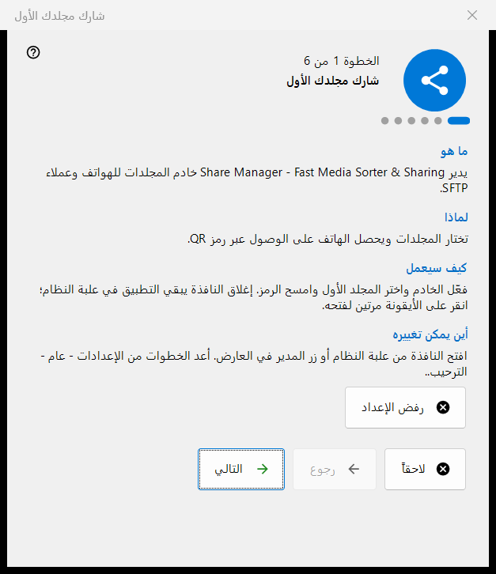
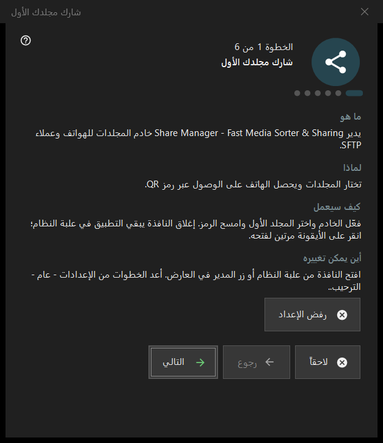

شارك مجلدك الأول
الغرض من هذه النافذة
معالج من ست خطوات ينقلك من لا شيء إلى مجلد يُقدَّم لهاتفك: يشغّل الخادم، ويختار المجلد الأول، ويضبط المنفذ والخيارات الأساسية، وينتهي بفحص الحالة. يُفتح عند أول تشغيل لـ Share Manager ويمكن إعادة تشغيله من الإعدادات.


بهذا الترتيب
- اقرأ المقدمة واضغط التالي.
- في صفحة تشغيل الخادم اضغط الزر مرة واحدة وأكّد طلب المسؤول.
- اختر المجلد الأول وخياراته.
- أبقِ المنفذ أو غيّره.
- اضبط اللغة وخيارات بدء التشغيل والشبكة المحلية.
- في الصفحة الأخيرة تحقّق من الحالة وافتح رمز QR واضغط إنهاء.
عناصر النافذة
الخطوات والأزرار
يعرض التذييل الخطوة N من 6. رجوع والتالي ينقلان بين الصفحات، ويتحول التالي إلى إنهاء في الصفحة الأخيرة، ولاحقاً يغلق المعالج ويُبقي ما أكّدته مسبقاً، ورفض الإعداد يغلقه نهائياً. في كل صفحة أربع كتل قصيرة: ما هو، لماذا، كيف سيعمل، وأين يمكن تغييره.
تشغيل الخادم
يبقى الخادم متوقفاً حتى هذه الخطوة. يطلب زر التفعيل صلاحيات المسؤول مرة واحدة ويضيف قاعدة واحدة في جدار حماية Windows للبرنامج. إذا ألغيت الطلب يبقى الخادم متوقفاً ويمكنك المحاولة مرة أخرى؛ وإذا كان قيد التشغيل بالفعل تذكر الصفحة أنه لا حاجة إلى رفع صلاحيات إضافي.
المجلد الأول
اختر مجلداً، ثم اسمه وملفه الشخصي وصلاحية الوصول. إضافة المورد الأول الآن.. يفتح معالج الموارد. يلزم مجلد واحد على الأقل للمتابعة. تُرسل الإعدادات إلى الخادم، وتبقى المجلدات قابلة للتعديل من قائمة النافذة الرئيسية.
المنفذ
يختاره النظام يعيّن منفذاً مرة واحدة ويحتفظ به؛ ومنفذ ثابت: يتيح لك كتابة رقمك الخاص، مثلاً لتوجيه المنفذ في الموجّه. يُكتب الرقم في كل رمز QR وملف .fmscfg، لذا فتغييره لاحقاً يوقف الرموز التي سُلّمت بالفعل. قاعدة جدار الحماية تخص البرنامج لا المنفذ.
الإعدادات الأساسية
لغة الواجهة، والتشغيل عند تسجيل الدخول إلى Windows، وفتح نافذة المدير عند بدء التشغيل، والشبكة المحلية فقط (بدون وصول من الإنترنت). وضع الشبكة المحلية يوقف توجيه المنافذ وعنوان الإنترنت. خيار بدء التشغيل في إصدار Store يُدار من إعدادات Windows.
الإنهاء
تفحص الصفحة الأخيرة الخادم والمجلدات المختارة وتعرض النتيجة؛ والحالة الخضراء تعني أن هناك مشاركة تعمل فعلاً مع وصول إلى المجلد. رمز QR للهاتف يفتح الرمز، وتحديث يكرر الفحص. إذا كانت الحالة تحتاج إلى انتباه، فأصلح السبب في النافذة الرئيسية أو ارجع إلى خطوة المجلد.
إعادة تشغيل المعالج
الإعدادات - عام - الترحيب.. يفتح قائمة فيها إعادة إعداد المجلدات، وهي تفتح هذا المعالج من جديد.